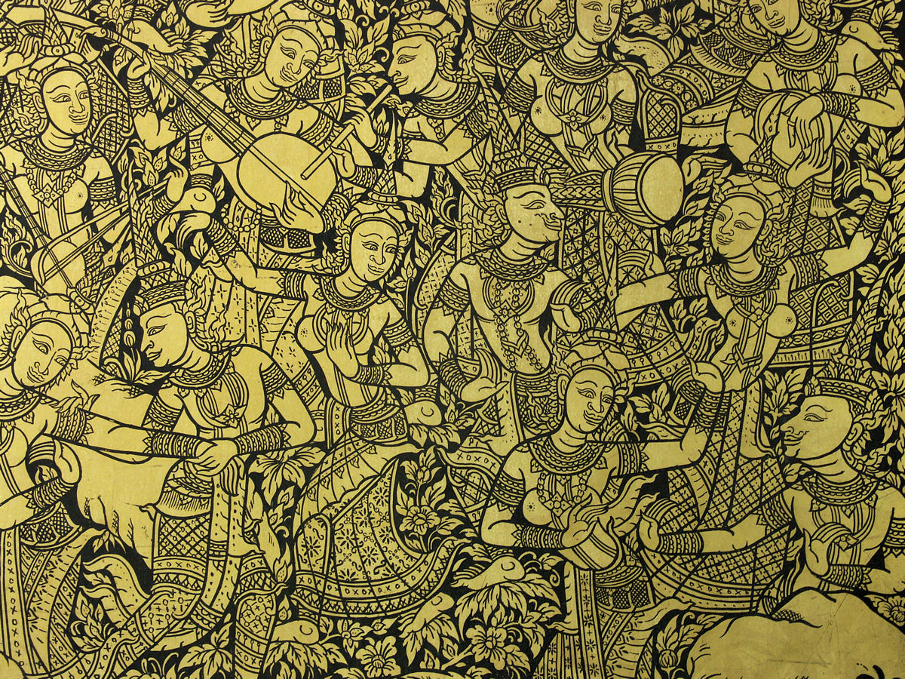
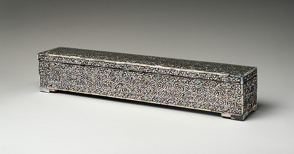
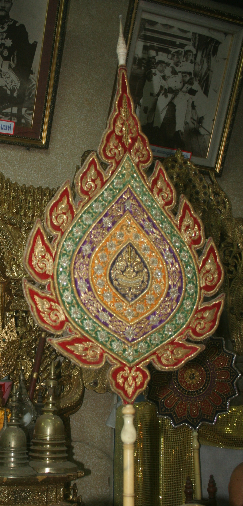

ทำไมจึงเรียก “ลายรดน้ำ”
ขั้นตอนท้ายใช้น้ำล้างน้ำยาที่เขียนกันทองออก จนเผยลวดลายทองบนพื้นรักดำ
THAI ART · CRAFT · ARCHITECTURE
Gold, lacquer & sacred spaces
สำรวจความงามของทองคำบนพื้นรักดำ และเส้นสายของสถาปัตยกรรมไทย ผ่านภูมิปัญญา ความเชื่อ และฝีมือช่าง
ขั้นตอนท้ายใช้น้ำล้างน้ำยาที่เขียนกันทองออก จนเผยลวดลายทองบนพื้นรักดำ
พบในตู้พระธรรม บานประตู หน้าต่าง และเครื่องใช้ทางศาสนาหรือราชสำนัก
งานลายรดน้ำตกแต่งส่วนต่าง ๆ ของอาคาร ควบคู่กับงานแกะสลัก ปิดทอง และประดับกระจก
01 / LAI ROD NAM
ลายรดน้ำเป็นงานประณีตศิลป์ที่สร้างลวดลายทอง บนพื้นรักดำ โดยเขียนน้ำยากันทองในพื้นที่ที่ต้องการให้เป็นสีดำ จากนั้นเตรียมพื้นสำหรับปิดทองและล้างน้ำยาออกด้วยน้ำ
ความงามของงานอยู่ที่จังหวะเส้น ความละเอียดของลวดลาย และเรื่องราวที่ช่างถ่ายทอดลงบนวัตถุ ตั้งแต่ลายพันธุ์พฤกษาไปจนถึงภาพเล่าเรื่องทางศาสนา
งานลงรักปิดทอง งานประดับมุก และงานประดับกระจก อาจปรากฏบนวัตถุประเภทเดียวกัน แต่เป็นคนละเทคนิคกับลายรดน้ำ
02 / MATERIALS
องค์ประกอบสำคัญของการสร้างลวดลายทองบนพื้นรักดำ
เตรียมพื้นไม้หรือวัสดุรองรับให้เรียบก่อนลงรัก
ใช้เตรียมพื้นและเป็นส่วนสำคัญของการยึดทอง
น้ำยาหรดาลใช้กันทองในส่วนที่ต้องการให้เห็นพื้นดำ
แผ่นทองบางที่ปิดลงบนพื้นผิวที่เตรียมไว้
พู่กันใช้เขียนรายละเอียด ส่วนน้ำใช้ล้างเผยลาย
เนื้อหาส่วนนี้อธิบายวัสดุเพื่อการศึกษา การปฏิบัติจริงควรเรียนกับช่างผู้ชำนาญ เพราะวัสดุบางชนิด เช่น หรดาล มีสารหนูเป็นองค์ประกอบ
03 / THE PROCESS
ภาพรวมของกระบวนการสร้างลายรดน้ำใน 6 ขั้นตอน
กำหนดองค์ประกอบและเรื่องราวให้เหมาะกับชิ้นงาน
เตรียมพื้นผิวและลงรักให้เรียบตามกรรมวิธีของช่าง
นำลายจากแบบร่างลงบนพื้นผิวชิ้นงาน
เขียนในส่วนที่ต้องการให้คงเป็นพื้นรักดำ
เตรียมชั้นรักสำหรับยึดทอง แล้วปิดทองคำเปลว
ล้างน้ำยาและทองส่วนที่ไม่ต้องการออก จนเผยลาย
INTERACTIVE EXPERIENCE
กดปุ่มเพื่อดูภาพจำลองการเผยลวดลาย หลังการล้างน้ำยาออกจากพื้นผิว
เป็นภาพสาธิตทางดิจิทัล ไม่ใช่ภาพบันทึกขั้นตอนการทำชิ้นงานจริง
พร้อมเริ่มจำลอง
04 / OBJECTS & STORIES
ทำความเข้าใจประเภทวัตถุ พร้อมแยกเทคนิคของภาพตัวอย่าง
SCRIPTURE CABINET
ตู้สำหรับเก็บคัมภีร์และเอกสารทางพุทธศาสนา ตัวอย่างนี้เป็นไม้ตกแต่งด้วยทองบนพื้นรัก สมัยรัตนโกสินทร์
ดูรายการ The Met ↗
TEMPLE DOORS & WINDOWS
ช่องเปิดของอาคารเป็นพื้นที่ของงานประณีตศิลป์ ภาพนี้แสดงรายละเอียดลายทอง บนบานหน้าต่างวัดสุทัศน์
ดูแหล่งภาพ ↗
MANUSCRIPT CHEST
ใช้เก็บคัมภีร์ใบลาน ตัวอย่างนี้เป็นไม้ลงรักประดับมุก ต้นคริสต์ศตวรรษที่ 19 ใช้เปรียบเทียบกับงานลายรดน้ำ
ภาพตัวอย่าง: งานประดับมุก ดูรายการ The Met ↗
ROYAL UTENSILS & FANS
เครื่องใช้ในราชสำนักและสงฆ์มีเทคนิคตกแต่งหลากหลาย ภาพนี้เป็นพัดยศ ใช้แสดงประเภทวัตถุ ไม่ยืนยันว่าเป็นงานลายรดน้ำ
ภาพประกอบประเภทวัตถุ ดูแหล่งภาพ ↗05 / PATTERN & MEANING
ตัวอย่างกลุ่มลายและภาพที่ช่วยเล่าเรื่องในศิลปกรรมไทย
เส้นโค้งและปลายสะบัดที่สร้างจังหวะ เป็นองค์ประกอบสำคัญของลายไทยหลายรูปแบบ
ลายเถา ใบ และดอกไม้ ที่ช่างจัดองค์ประกอบให้ต่อเนื่องตามพื้นที่ของชิ้นงาน
ภาพเทพนม ครุฑ กินรี และสัตว์หิมพานต์ ถ่ายทอดเรื่องราวและสัญลักษณ์ทางวัฒนธรรม
ภาพจากชาดก พุทธประวัติ หรือรามเกียรติ์ เปลี่ยนพื้นผิวของวัตถุให้เป็นพื้นที่เล่าเรื่อง
06 / SACRED SPACES
เลือกองค์ประกอบเพื่ออ่านคำอธิบายประกอบแผนภาพ
EXPLORE THE DETAILS
หมายเลข 1 ในแผนภาพ
ส่วนยอดที่ปลายสันหลังคา รูปทรงแตกต่างกันตามแบบและสกุลช่าง ไม่ใช่ทุกช่อฟ้าที่ทำเป็นครุฑยุดนาค
ช่อฟ้า ใบระกา และหางหงส์เป็นองค์ประกอบของเครื่องลำยอง ส่วนหน้าบันเป็นพื้นที่สามเหลี่ยมใต้กรอบหลังคา งานปิดทองบนสถาปัตยกรรมไม่ใช่ลายรดน้ำทั้งหมด
REFERENCES & IMAGE CREDITS
ลิงก์สำหรับอ่านต่อและตรวจสอบวัตถุในภาพ
เอกสารตู้ลายทองของสำนักหอสมุดแห่งชาติ
อ่านเอกสาร ↗ภาพตู้พระธรรมและกล่องคัมภีร์ใบลาน เผยแพร่เป็น Public Domain
ตู้พระธรรม · 1971.139 ↗ กล่องคัมภีร์ · 2017.379 ↗ภาพโดย Mattana · Public Domain
ดูต้นฉบับและเงื่อนไข ↗ภาพโดย Chainwit. · CC BY-SA 4.0
ดูต้นฉบับ ↗ภาพโดย เทวประภาส มากคล้าย / Tevaprapas · CC BY 3.0
ดูต้นฉบับ ↗ภาพใช้เพื่อประกอบการศึกษา แสดงผลย่อขนาดหรือครอปด้วย CSS โดยไม่ได้ดัดแปลงไฟล์ภาพต้นฉบับ